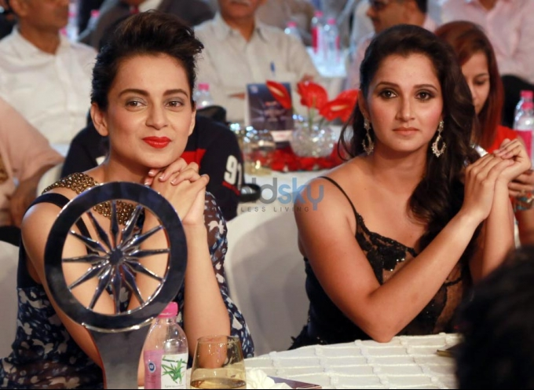
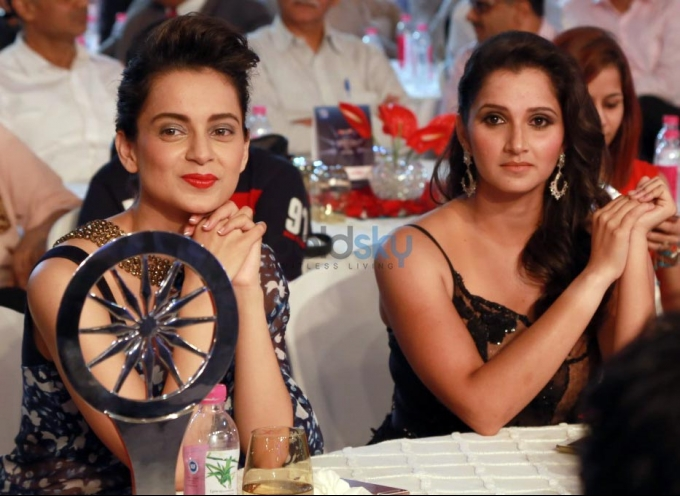

About Saniya Mirza

Search More about Saniya Mirza
![]() Details
Age
Childhood
Education
Married-life
Rewards
Gallary
Details
Age
Childhood
Education
Married-life
Rewards
Gallary
Details
Sania Mirza is an Indian professional tennis player. Sania Mirza's zodiac sign is Scorpio. She was formerly ranked first in the world in doubles and has six Grand Slam victories to her name. She was ranked as India's top tennis player by the Women's Tennis Association from 2003 till she retired from solo play in 2013.
In total, the duo won three Grand Slams, five WTA Premier titles, and one WTA International championship. Sania received the Rajiv Gandhi Khel Ratna in 2015 for her outstanding performance. Ace Against Odds, an autobiography by Mirza that details her journey to fame, was released in July 2016. The book also discusses the individuals and relationships that have helped Mirza develop as a person and a sportsperson, as well as some of her most memorable interactions on and off the court.
With Hingis, Sania began her 2016 campaign by taking home the Australian Open, their final Grand Slam. After the two broke up in August, Sania teamed up with Barbora Strycova and won the WTA doubles number one ranking. Together, the pair won five WTA Premier titles, three Grand Slams, one WTA International title, and three WTA Premier titles.
Sania received the Rajiv Gandhi Khel Ratna in 2015 for her outstanding performance. With Hingis, Sania began her 2016 campaign by taking home the Australian Open, their final Grand Slam. She continues to carry the torch for women's tennis in the nation more than ten years after making her tennis debut.
Age
Sania Mirza's birthday is on the 15th of November. Sania Mirza was born in the year 1986. Sania Mirza's age is 46 years as of 2023.
Childhood
Sania Mirza was born on November 15, 1986. The Birthplace of Sania Mirza is Mumbai. Sania Mirza was born into a Muslim family. Imran Mirza is the Father of Sania Mirza and Naseema Mirza is the Mother of Sania Mirza, who both worked in the printing industry.
She and her younger sister Anam were nurtured in a devout Sunni Muslim home in Hyderabad shortly after her family relocated there shortly after her birth. Mohammad Asaduddin, a cricket player and the son of former India national cricket team captain Mohammad Azharuddin, is married to Anam. She is a distant relative of the former cricket captains of Pakistan and India, Asif Iqbal and Ghulam Ahmed. At the age of six, she started playing tennis. Her father and Roger Anderson have both coached her.

Education
Sania Mirza (sanija mirza; born 15 November 1986) is an Indian former professional tennis player. A former doubles world No. 1, she won six major titles – three in women's doubles and three in mixed doubles.[4][5] From 2003 until her retirement from singles in 2013, she was ranked by the Women's Tennis Association as the Indian No. 1 in singles.[6][7] Throughout her career, Mirza has established herself as one of the most known, highest-paid, and influential athletes in India.[8][9][10]In singles, Mirza had wins over Svetlana Kuznetsova, Vera Zvonareva, and Marion Bartoli, as well as former world-number-ones Martina Hingis, Dinara Safina, and Victoria Azarenka. She is the highest-ranked Indian female player ever, peaking at world No. 27 in mid-2007. However, a major wrist injury caused her to shift to doubles. Mirza has achieved a number of firsts for women's tennis in India, including reaching the one million-US$ mark in career earnings (currently over US$7.2 million), winning a singles WTA Tour title, and winning a major title, as well as qualifying for (and eventually winning) the WTA Finals in 2014 in doubles partnering Cara Black, and defending her title the following year partnering Martina Hingis.[11] Mirza retired from professional tennis in February 2023.[12]She is one of only two Indian women to win a WTA Tour title, and the only one to be ranked within the top 100 in singles. Mirza is the third Indian woman in the Open Era (after Nirupama Mankad and Nirupama Sanjeev, and the second in singles after Sanjeev) to contest and win a match at a major, and the first to advance past the second round. In doubles, Mirza won 43 titles and spent 91 weeks as world No. 1.[13] In 2005, Mirza was crowned the Newcomer of the Year by the WTA, and in 2015 she and Martina Hingis were the Doubles Team of the Year, going on to earn a 44-match winning streak, one of the longest in history. Mirza has also won a total of 14 medals (including six golds) at three major multi-sport events, namely the Asian Games, the Commonwealth Games and the Afro-Asian Games.

Married-life
Sania’s post featured her son Izhaan’s pic but she did not add any photo of her husband Shoaib Malik. Netizens are wondering if Sania just indirectly confirmed her divorce.
One social media user wrote, “More strength to you, Alhamdulillah for 2022 #levitating Calendar!”. Another wrote, “True icon and fighter in every sense…deepest respect..”
Several fans requested her to issue a clear statement about her marital status. One user wrote, “Start the New Year 2023 on a positive note by scotching rumours doing rounds in the media of your imminent divorce with Shoaib. At least for your son, you should think twice even if you have anything on your mind!”
Sania Mirza (ˈsaːnijaː ˈmirzaː; born 15 November 1986) is an Indian former professional tennis player. A former doubles world No. 1, she won six major titles – three in women's doubles and three in mixed doubles.[4][5] From 2003 until her retirement from singles in 2013, she was ranked by the Women's Tennis Association as the Indian No. 1 in singles.[6][7] Throughout her career, Mirza has established herself as one of the most known, highest-paid, and influential athletes in India.[8][9][10]
In singles, Mirza had wins over Svetlana Kuznetsova, Vera Zvonareva, and Marion Bartoli, as well as former world-number-ones Martina Hingis, Dinara Safina, and Victoria Azarenka. She is the highest-ranked Indian female player ever, peaking at world No. 27 in mid-2007. However, a major wrist injury caused her to shift to doubles. Mirza has achieved a number of firsts for women's tennis in India, including reaching the one million-US$ mark in career earnings (currently over US$7.2 million), winning a singles WTA Tour title, and winning a major title, as well as qualifying for (and eventually winning) the WTA Finals in 2014 in doubles partnering Cara Black, and defending her title the following year partnering Martina Hingis.[11] Mirza retired from professional tennis in February 2023.[12]
Rewards
Sania Mirza (ˈsaːnijaː ˈmirzaː; born 15 November 1986) is an Indian former professional tennis player. A former doubles world No. 1, she won six major titles – three in women's doubles and three in mixed doubles.[4][5] From 2003 until her retirement from singles in 2013, she was ranked by the Women's Tennis Association as the Indian No. 1 in singles.[6][7] Throughout her career, Mirza has established herself as one of the most known, highest-paid, and influential athletes in India.[8][9][10]
In singles, Mirza had wins over Svetlana Kuznetsova, Vera Zvonareva, and Marion Bartoli, as well as former world-number-ones Martina Hingis, Dinara Safina, and Victoria Azarenka. She is the highest-ranked Indian female player ever, peaking at world No. 27 in mid-2007. However, a major wrist injury caused her to shift to doubles. Mirza has achieved a number of firsts for women's tennis in India, including reaching the one million-US$ mark in career earnings (currently over US$7.2 million), winning a singles WTA Tour title, and winning a major title, as well as qualifying for (and eventually winning) the WTA Finals in 2014 in doubles partnering Cara Black, and defending her title the following year partnering Martina Hingis.[11] Mirza retired from professional tennis in February 2023.[12]
Gallary


 
